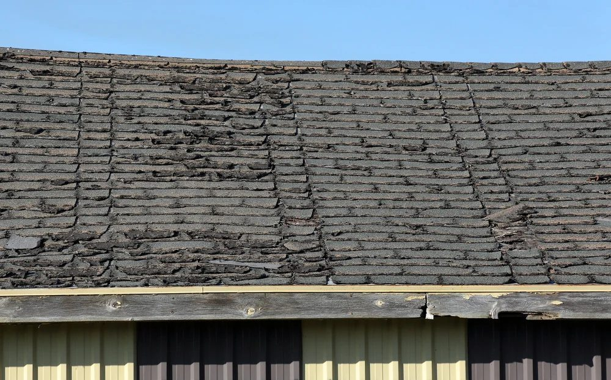

Roof Replacement Company
When repairs aren’t enough, our Houston team installs a complete new roof system built to handle Gulf Coast heat, wind and heavy rain, backed by our 50-year workmanship warranty. Get your free roof replacement estimate today!
Get A Roofing Estimate6 Signs You Need A Roof Replacement
Houston’s intense sun, humidity and storm season are tough on roofs. Watch for these warning signs that it may be time for a replacement:

How Long Should A Roof Last In Greater Houston Before Replacement?
The material on your roof has the biggest impact on its lifespan. Typical lifespans for common roofing materials are:
Why Choose The Crescent Builders For Roof Replacement In Greater Houston?
Our Roof Replacement Process
Roof Replacement Materials
We offer four roofing materials so you can find the right fit for your Houston home, budget and style.
Cost Of Roof Replacement In Greater Houston
The average asphalt roof replacement in Greater Houston costs about $10,292 – $19,608. Your exact cost depends on these factors:
Roof Replacement Or Roof Repairs?
Greater Houston Roof Replacement Financing
Flexible payment plans can make a new roof fit your budget, so you don’t have to wait to protect your home.
Roof FinancingCalculate Your Greater Houston Roof Replacement Costs
Use our roof cost calculator for an instant price range based on your roof’s size and pitch.
Calculate Roofing Costs